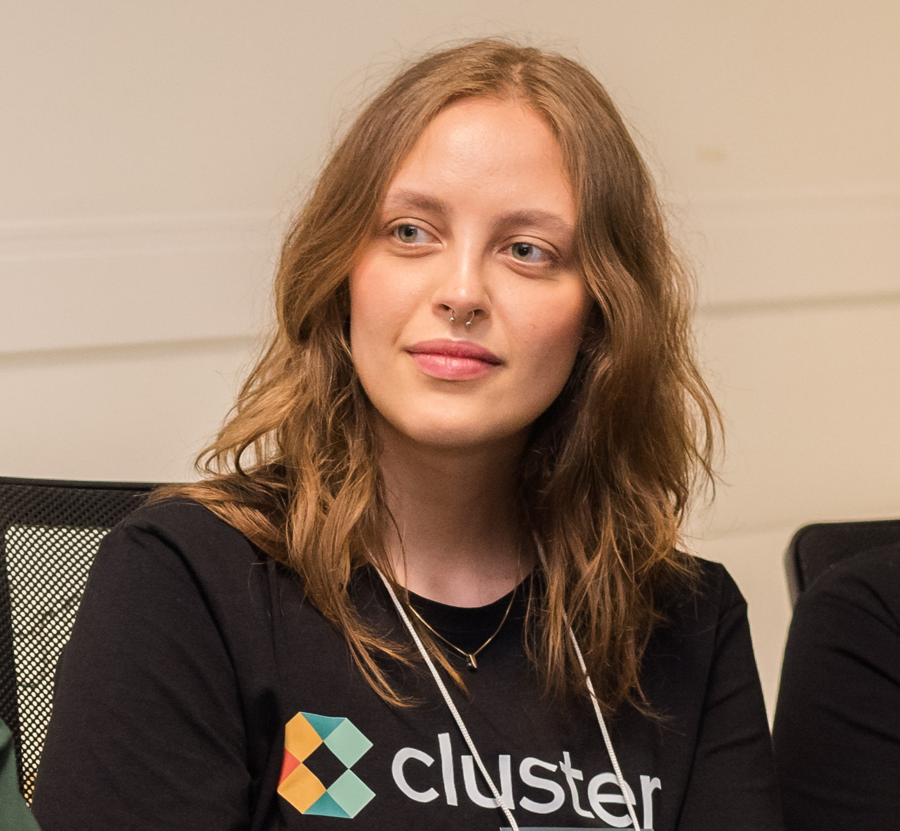

Sobre Mim
Após passar no curso de Medicina - mais de uma vez - em Universidades aclamadas da região Sul do Brasil, me encontrei verdadeiramente na área de TI e atualmente trabalho com engenharia de software com foco em frontend. Tendo em mente uma formação completa e orientada para meus objetivos profissionais curso Administração na Universidade Federal do Rio Grande do Sul (UFRGS) e Engenharia de Software no Centro Universitário Internacional (UNINTER). Atualmente, trabalho como desenvolvedor frontend e trabalho com React, Javascript e Typescript.